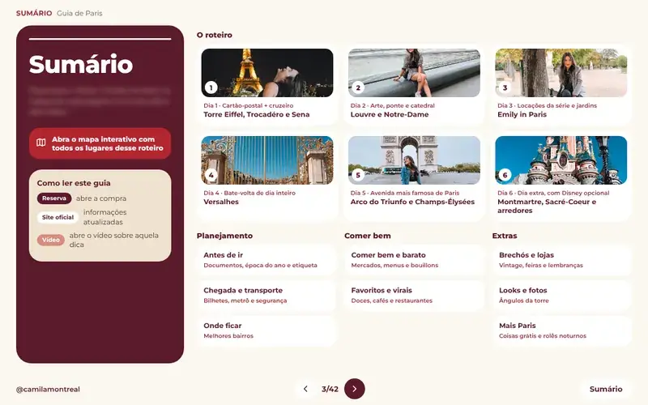

Versão desktop
Para planejar com calma, no computador.
Você está emInício
Guia de viagem · Paris
o roteiro que eu faria de novo.
Roteiro por região, para quantos dias você tiver, com os lugares, as dicas e os links que eu mais recomendo.
Pagamento seguro · Acesso por e-mail logo após a confirmação · Garantia de 7 dias
Os lugares que eu mostro no guia, do jeito que eu vivi cada um.
É Paris através dos meus olhos e das minhas experiências, num roteiro que se adapta à sua viagem.
Não é só um itinerário: tem as locações de Emily in Paris, passeios para reservar com desconto, onde comer bem e barato, os melhores bairros para ficar, transporte e segurança, brechós, dicas de foto e coisas de graça. Você não precisa seguir tudo: pegue uma região, vários dias, ou monte o seu.
Dentro do guia
Tem um jeito de ver a Torre Eiffel por dentro sem pagar ingresso.
Não importa quantos dias você tem: o guia é organizado por região, então sempre tem o que fazer. Escolha uma e espie.


No guia, você encontra as melhores paradas, spots para foto e links com desconto.
Um gostinho do que vem no arquivo. Toque para folhear.

O resto está no guiaVocê recebe os dois arquivos, com o mesmo conteúdo.
Para planejar com calma, no computador.
Para consultar durante a viagem, com uma mão só.
Baixe o PDF e use sem internet.
Toque em uma história para ver o que vem no guia.

Sempre que eu conhecer um lugar novo, você vai saber.
Improvisar em Paris pode custar dinheiro e horas.
No guia, tudo isso já vem resolvido.
Cami tem 32 anos, já conheceu 38 países e mora no Canadá há 4 anos. Vai com frequência a Paris.
Seu amor por novas culturas e sabores faz a Cami explorar ao máximo os destinos e planejar os mínimos detalhes das viagens. Também leva grupos de viagem pelo mundo e ama compartilhar experiências!
Menos tempo planejando, mais tempo em Paris.
Guia completo de Paris
R$ 67,90
Comprar o guiaGarantia de 7 dias.
Você recebe o link por e-mail, com a versão desktop e a celular do PDF. Cupom CAMILAMONTREAL5 nos passeios do guia.
Site em português: preço em reais. Para ver em inglês, use o botão EN.
Dúvidas? Fale comigo no InstagramAssim que o pagamento for confirmado, você recebe um e-mail com o link do PDF interativo, com versão para desktop e versão para celular, com sumário clicável, botões, reels e mapa interativo.
Para quantos você tiver. O roteiro é organizado por região e cada região funciona sozinha: se fica menos dias, escolha as que combinam com você; se fica mais, há ideias como Versalhes, Giverny e Disney.
Sim. Há uma dica para quem tem uma escala longa: como sair do aeroporto, ver o essencial e voltar a tempo, com o meu dia de 4 horas em Paris.
Preços e horários em Paris mudam. O guia aponta os sites oficiais para conferir antes de reservar e recebe atualizações gratuitas pelo mesmo link.
São links de reserva de passeios, chip, seguro e câmbio com o meu cupom. Alguns parceiros me pagam uma comissão quando você reserva pelo link, sem custo extra para você.
Não. O guia é todo em português e traz três frases para pedir como local e dicas de etiqueta, como começar toda conversa com “bonjour”.
Funciona. Há uma versão pensada para a tela do celular, e você pode baixar o PDF e abri-lo sem internet. Links e vídeos precisam de conexão.
O guia não é focado em crianças, mas tem uma seção com ideias, como o Jardim de Luxemburgo, a Cité des Sciences e a subida na Torre Eiffel.
O guia compara os melhores bairros para ficar, para você escolher, mas não faz reserva de hotel.
Você pode pedir o reembolso em até 7 dias. Escreva para o contato que está no rodapé da página.
Há um e-book separado só com dicas para a Disney: camilamontreal.com/ebooks.
Sim! Você pode ver todos os meus roteiros no meu site: camilamontreal.com/ebooks.

Você já escolheu o destino. Falta decidir como chegar lá: com 30 abas abertas ou com um guia na mão.
Quero o guia de ParisVai à Disneyland Paris? Tenho um e-book só com dicas da Disney. camilamontreal.com/ebooks